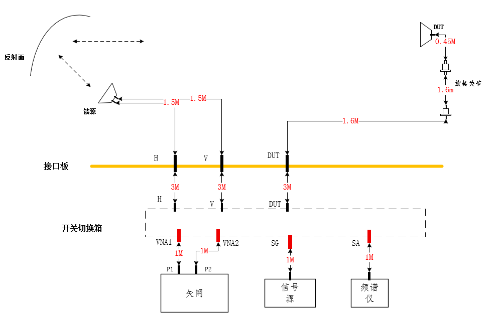
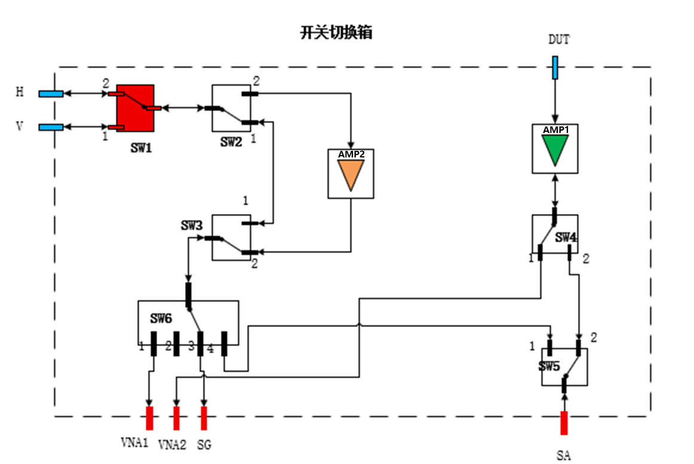

CATR暗室
校准测试方案
链路命令、校准模板与测试项封装草案
Quiet Zone Tester 项目
版本日期：2026-07-17
版本日期：2026-07-17
L_* 表示 Loss，单位 dBL_VNA_H、L_DUT_VNAS21_* 表示网分原始 S21L_*| 参数 | 含义 | 来源 |
|---|---|---|
L_AUX_A/B/C | 三根 3M 辅助线自身损耗 | LINK-CAL-001 辅助线独立测试 |
L_CH_INT_H/V/DUT | 暗室内部 H、V、DUT 段链路损耗，扣除对应 3M 辅助线 | LINK-CAL-001 暗室内部链路校准 |
L_VNA_* | 网分 VNA 测试链路等效损耗 | LINK-CAL-002 链路损耗校准 |
L_DUT_VNA | 转台DUT到VNA的损耗 | LINK-CAL-002 AUX-D 回传段校准 |
L_SA_* / L_SG_* | 频谱仪接收链路 / 信号源发射链路等效损耗 | LINK-CAL-003 / LINK-CAL-004 |
| 名称 | 含义 |
|---|---|
网分 PORT1 / PORT2 | 外部网分真实端口，校准时可按项目临时改接。 |
VNA1 / VNA2 / SG / SA / H / V / DUT | 链路箱或暗室接口板物理端口名，需按上下文区分。 |
value_db | 参与计算的校准后损耗值；按频点保存。 |
raw_s21_db | 网分原始测量值；用于校准追溯。 |
resource/暗室整体链路.png，用于说明链路箱外部的暗室接口板、馈源、反射面、DUT/标准增益喇叭之间的物理关系。
resource/原始链路图.png，用于说明链路箱实际端口关系，后续校准与测试连接图均以此为端口依据。
| 测试项 ID | 名称 | 仪表角色 | DUT/校准件状态 | 链路模板 |
|---|---|---|---|---|
LINK-CAL-001 | 暗室内部链路校准 | VNA S21 闭环 | 三根 3M 辅助线直接接网分和暗室接口板 H/V/DUT | 暗室内部辅助线链路 |
LINK-CAL-002 | VNA 链路损耗校准 | VNA 发射 + 接收 | 标准增益喇叭；AUX-D 接转台DUT接口 | VNA 主链路 + AUX-D 回传段 |
LINK-CAL-003 | SA 校准 | VNA S21 闭环 | PORT1 接 VNA1 或 H/V 参考端，PORT2 接 SA | SA 校准链路 |
LINK-CAL-004 | SG 校准 | VNA S21 闭环 | PORT1 接 SG，PORT2 接 VNA2 | SG 校准链路 |
LINK-TXR-001 | 通道校准 TX&RX | VNA | 接上 DUT；不使用 DUT→VNA2 | DUT TX&RX：通道校准链路 |
LINK-TXR-002 | 方向图 TX&RX 测试 | VNA | 接上 DUT；不使用 DUT→VNA2 | DUT TX&RX：方向图链路 |
LINK-TXR-003 | 有源增益 TX&RX 测试 | VNA | 接上 DUT；不使用 DUT→VNA2 | DUT TX&RX：有源增益链路 |
LINK-TXR-004 | 天线板 EIRP 测试 | VNA | 接上 DUT；不使用 DUT→VNA2 | DUT TX&RX：天线板 EIRP 链路 |
LINK-GT-001 | G/T 测试 | SG 发射 + SA 接收 | DUT 接收侧切到 SA | SG/SA 链路 |
LINK-SYS-001 | 整机发射测试 | SA 接收；SG 不输出功率 | DUT 自身发射 | SG/SA 链路 |
LINK-SYS-002 | 整机接收测试 | SG 输出测试信号 | DUT 自身接收；SA 不参与 | SG-only 链路 |
DUT, AMP1, VNA2，H/V 到 VNA1| 测量顺序 | 外部接线 | 链路箱指令 |
|---|---|---|
| 0：辅助线独立测试 | 三根 3M 辅助线分别直连网分 PORT1 与 PORT2，测得 L_AUX_A、L_AUX_B、L_AUX_C | 不下发 |
| 1：DUT-H | 网分 PORT1 经 AUX-A 接暗室接口板 H；暗室接口板 DUT 经 AUX-C 接网分 PORT2 | 不下发 |
| 2：DUT-V | 网分 PORT1 经 AUX-B 接暗室接口板 V；暗室接口板 DUT 经 AUX-C 接网分 PORT2 | 不下发 |
| 3：DUT 内部段 | 网分 PORT1 经 AUX-A 接转台DUT接口；暗室接口板 DUT 经 AUX-C 接网分 PORT2 | 不下发 |
| 极化 | 馈源接收路径 | 链路箱指令 |
|---|---|---|
| H | 不经过 AMP2 | CONFigure:LINK DUT, AMP1, VNA2 + CONFigure:LINK H, VNA1 |
| V | 不经过 AMP2 | CONFigure:LINK DUT, AMP1, VNA2 + CONFigure:LINK V, VNA1 |
| H | 经过 AMP2 | CONFigure:LINK DUT, AMP1, VNA2 + CONFigure:LINK H, AMP2, VNA1 |
| V | 经过 AMP2 | CONFigure:LINK DUT, AMP1, VNA2 + CONFigure:LINK V, AMP2, VNA1 |
| 等效校准对象 | 闭合环路链路箱指令 |
|---|---|
| CAL-004 SA：H 发射，经 DUT 到 SA | CONFigure:LINK H, VNA1 + CONFigure:LINK DUT, AMP1, SA |
| CAL-004 SA：V 发射，经 DUT 到 SA | CONFigure:LINK V, VNA1 + CONFigure:LINK DUT, AMP1, SA |
| CAL-004 SA：H 馈源侧到 SA | CONFigure:LINK H, SA |
| CAL-004 SA：V 馈源侧到 SA | CONFigure:LINK V, SA |
| CAL-004 SA：H 馈源侧经 AMP2 到 SA | CONFigure:LINK H, AMP2, SA |
| CAL-004 SA：V 馈源侧经 AMP2 到 SA | CONFigure:LINK V, AMP2, SA |
| CAL-005 SG：H 极化，经 DUT 接收到 VNA2 | CONFigure:LINK H, SG + CONFigure:LINK DUT, AMP1, VNA2 |
| CAL-005 SG：V 极化，经 DUT 接收到 VNA2 | CONFigure:LINK V, SG + CONFigure:LINK DUT, AMP1, VNA2 |
L_AUX_A、L_AUX_B、L_AUX_C，用于后续扣除辅助线自身损耗。| 参数 | 物理段 | 计算公式 |
|---|---|---|
L_AUX_A/B/C | 三根 3M 辅助线自身损耗 | L_AUX_* = -S21_AUX_* |
L_CH_INT_H | 暗室接口板 H → 暗室接口板 DUT | -S21_CH_INT_H_RAW - L_AUX_A - L_AUX_C |
L_CH_INT_V | 暗室接口板 V → 暗室接口板 DUT | -S21_CH_INT_V_RAW - L_AUX_B - L_AUX_C |
L_CH_INT_DUT | 转台DUT接口 → 暗室接口板 DUT | -S21_CH_INT_DUT_RAW - L_AUX_A - L_AUX_C |
L_CH_INT_FEED_H | 暗室接口板 H / 馈源发射 → 转台DUT接口 | L_CH_INT_H - L_CH_INT_DUT |
L_CH_INT_FEED_V | 暗室接口板 V / 馈源发射 → 转台DUT接口 | L_CH_INT_V - L_CH_INT_DUT |
CONFigure:LINK DUT, AMP1, VNA2 + CONFigure:LINK H/V, VNA1CONFigure:LINK DUT, AMP1, VNA2 + CONFigure:LINK H/V, AMP2, VNA1CONFigure:LINK DUT, AMP1, VNA2。| 参数 | 路径 | 用途 |
|---|---|---|
L_VNA_H / L_VNA_V | VNA1 → H/V → 空间 → 标准喇叭 → VNA2 | VNA 类 DUT 测试主链路损耗修正。 |
L_VNA_H_AMP2 / L_VNA_V_AMP2 | VNA1 → AMP2 → H/V → 空间 → 标准喇叭 → VNA2 | 经过 AMP2 的 VNA 链路损耗修正。 |
L_AUX_D | AUX-D 辅助线自身损耗 | AUX-D 回传段测量修正，L_AUX_D = -S21_AUX_D。 |
L_DUT_VNA | 转台DUT接口 → VNA2 回传路径 | 由 AUX-D 参考与转台DUT接口测量结果计算得到。 |
CONFigure:LINK H, VNA1 发射；接收侧用 CONFigure:LINK DUT, AMP1, SA。CONFigure:LINK V, VNA1 + CONFigure:LINK DUT, AMP1, SA。CONFigure:LINK H, SACONFigure:LINK V, SACONFigure:LINK H, AMP2, SACONFigure:LINK V, AMP2, SA| 参数 | 路径 | 用途 |
|---|---|---|
L_SA_H / L_SA_V | DUT/馈源侧 → SA 的等效接收链路 | 频谱仪读数换算到 DUT/空间参考面。 |
L_SA_H_AMP2 / L_SA_V_AMP2 | 馈源侧 → AMP2 → SA 的等效接收链路 | 经过 AMP2 的 SA 接收路径修正。 |
CONFigure:LINK H, SG + CONFigure:LINK DUT, AMP1, VNA2。CONFigure:LINK V, SG + CONFigure:LINK DUT, AMP1, VNA2。| 参数 | 路径 | 用途 |
|---|---|---|
L_SG_H / L_SG_V | SG → H/V → 空间 → 标准喇叭/转台DUT接口 → VNA2 | 信号源输出功率换算到暗室/DUT 参考面。 |
| 测试项 | 馈源接收直通用途 | 馈源接收经过 AMP2 用途 |
|---|---|---|
| DUT 通道校准 | DUT 通道校准直通链路 | DUT 通道校准含 馈源接收路径链路 |
| 方向图测试 | 方向图直通链路 | 方向图含 馈源接收路径链路 |
| 有源增益测试 | 有源增益直通链路 | 有源增益含 馈源接收路径链路 |
| 天线板 EIRP 测试 | 天线板 EIRP 直通链路 | 天线板 EIRP 含 馈源接收路径链路 |
| TX 路径 | H 极化指令 | V 极化指令 |
|---|---|---|
| 馈源接收直通 | CONFigure:LINK H, VNA1 | CONFigure:LINK V, VNA1 |
| 馈源接收经过 AMP2 | CONFigure:LINK H, AMP2, VNA1 | CONFigure:LINK V, AMP2, VNA1 |
CONFigure:LINK DUT, AMP1, VNA2。CONFigure:LINK H/V, VNA1CONFigure:LINK H/V, AMP2, VNA1；接 DUT 时不切 DUT, AMP1, VNA2。CONFigure:LINK DUT, AMP1, SA + CONFigure:LINK H/V, SG；不使用 AMP2。CONFigure:LINK H/V, SG；SA 不参与，不下发 DUT, AMP1, SA。| 测试项 | 功率/仪表状态 | H 极化指令 | V 极化指令 |
|---|---|---|---|
| G/T 测试 | SG 发射，SA 接收；不允许 AMP2 | DUT, AMP1, SA + H, SG | DUT, AMP1, SA + V, SG |
| 整机发射测试 | DUT 发射，SA 接收；SG 不输出功率 | DUT, AMP1, SA + H, SG | DUT, AMP1, SA + V, SG |
| 极化 | 链路箱指令 |
|---|---|
| H | CONFigure:LINK DUT, AMP1, SA + CONFigure:LINK H, SG |
| V | CONFigure:LINK DUT, AMP1, SA + CONFigure:LINK V, SG |
DUT, AMP1, SACONFigure:LINK H, SGCONFigure:LINK V, SG| 正式测试链路 | 校准时使用的 VNA 链路 | 校准指令 |
|---|---|---|
| LINK-CAL-004 SA 校准 | 网分 PORT1 接链路箱 VNA1，网分 PORT2 接链路箱 SA | CONFigure:LINK H/V, VNA1 + CONFigure:LINK DUT, AMP1, SA |
| LINK-CAL-005 SG 校准 | 网分 PORT1 接链路箱 SG，网分 PORT2 接链路箱 VNA2 | CONFigure:LINK H/V, SG + CONFigure:LINK DUT, AMP1, VNA2 |
| 对象 | 建议字段 | 说明 |
|---|---|---|
| 测试项定义 | id/name/template | 稳定引用测试项和链路模板。 |
| 链路参数 | polarization/use_amp2 | TX&RX 和校准链路共用。 |
| 操作步骤 | commands[] | 按模板生成有序 链路箱指令。 |
| 禁止项 | forbidden_commands[] | 避免接 DUT 时误下发 DUT→VNA2、G/T 误用 AMP2。 |
| 人工确认 | manual_checks[] | 转台DUT到VNA的损耗校准需确认辅助线连接状态。 |
| 校准参数 | cal_params[] | 保存 L_* 损耗参数、频点数组和原始 S21_* 数据。 |